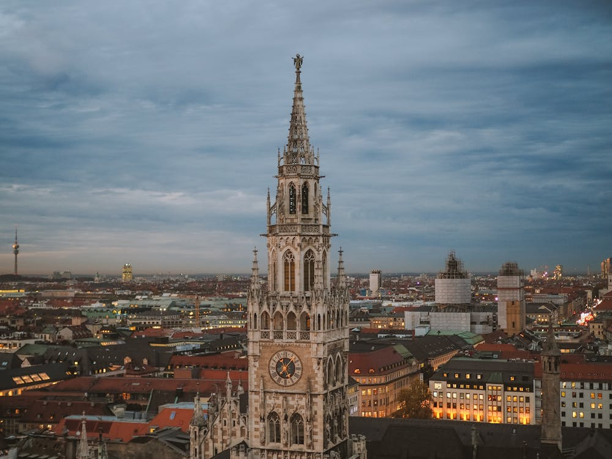
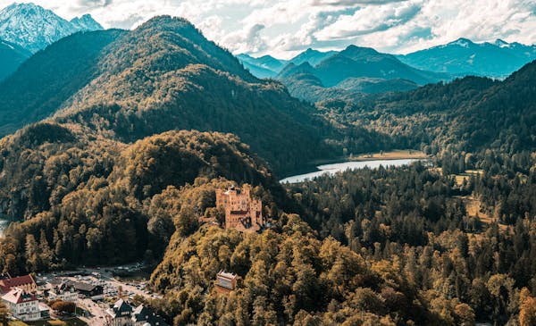

Historiaaaaaa

Foto da prefeitura de Munchen, Neues Rathus, construida em estilo gótico
Resumo histórico: Formação e marcos de Munique
Munique, fundada em 1158 pelo duque Henrique, o Leão, rapidamente se tornou um centro de comércio. No século XIV, tornou-se a capital da Baviera e prosperou economicamente, especialmente pela produção de cerveja. No século XIX, foi modernizada pelo rei Ludwig I, transformando-se em um centro cultural europeu. No século XX, foi palco do nascimento do movimento nazista e, após a devastação da Segunda Guerra Mundial, foi reconstruída. Hoje, Munique é uma metrópole próspera, conhecida por sua economia forte, cultura rica, Oktoberfest e alta qualidade de vida.
Paisagens

Vegetação predominante e clima
Munique situa-se nas planícies elevadas da Alta Baviera, a cerca de 50 km ao norte da borda norte dos Alpes, a uma altitude de cerca de 520 m. Os rios locais são o Isar e o Würm. Munique está situado no contraforte alpino. A parte norte deste planalto arenoso inclui uma área de sílex altamente fértil que já não é afetada pelos processos de dobramento geológico encontrados nos Alpes, enquanto a parte sul é coberta de colinas morainas. A cidade de Munique situa-se na região entre os climas atlântico úmido e continental seco. Outros fatores essenciais que determinam o clima da cidade são os Alpes e o rio Danúbio, que fazem a divisão do tempo da região (um lado dos Alpes apresenta clima diferente do outro). Graças a esses fatores o tempo é relativamente muito variável. O vento Föhn traz da região sul, durante o ano todo, correntes de ar irregularmente quentes e secas. Em conjunto com as correntes de ar está a boa vista à distância — e especialmente o conhecido céu azul da Baviera — estando os alpes da Baviera muito nitidamente visíveis.